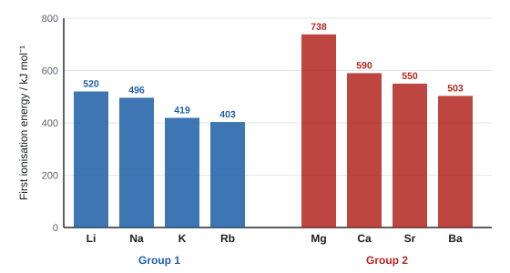

Redox chemistry and groups 1, 2 and 7
Oxidation numbers turn electron transfer into simple bookkeeping, and half-equations let you build any redox equation. With those tools you can explain the chemistry of the s-block metals and the halogens: why group 2 metals get more reactive down the group while the halogens get less reactive, why carbonates become harder to decompose, and how a few test-tube reactions identify an unknown ion. The topic finishes with acid–base titrations, measurement uncertainty and the reactions of the halogens.
Spec8.1Oxidation numbers and the rules
Know what an oxidation number is and the rules for assigning one.
What an oxidation number is
An oxidation number is the charge an atom would have if the compound were made entirely of ions. In a covalent bond, imagine the shared electrons all go to the more electronegative atom. It is a book-keeping tool: it lets you track electrons in any reaction, ionic or covalent.
Write the sign before the number: +2, −1. (A charge on an ion is written the other way round: Mg²⁺.)
The rules, in the order you apply them
| Rule | Example |
|---|---|
| An uncombined element is 0 | Na, Fe, O₂, Cl₂, S₈ are all 0 |
| A simple ion: oxidation number = its charge | Na⁺ +1, Mg²⁺ +2, Cl⁻ −1, O²⁻ −2 |
| The numbers in a neutral compound add up to 0 | H₂O: 2(+1) + (−2) = 0 |
| The numbers in an ion add up to the ion's charge | SO₄²⁻: (+6) + 4(−2) = −2 |
| Group 1 metals always +1; Group 2 always +2 | Na in NaCl, Ca in CaCO₃ |
| Fluorine is always −1 | F in HF, CaF₂, F₂O |
| Hydrogen is +1, except in metal hydrides (−1) | H in H₂O is +1; in NaH, CaH₂ it is −1 |
| Oxygen is −2, except in peroxides (−1) and with fluorine (+2 in F₂O) | O in H₂O₂ and Na₂O₂ is −1 |
| Chlorine is −1 in chlorides, but positive when bonded to O or F | Cl in ClO₃⁻ is +5 |
| In a covalent bond, the more electronegative atom takes the negative value | In NH₃, N is −3 and H is +1 |
Fill in the "fixed" elements first (Group 1 and 2 metals, F, then H, then O), then the unknown is whatever makes the total equal the overall charge. Finally check the sum.
- The meaning of an oxidation number: "the charge the atom would have if the species were fully ionic" (WCH12 Jun 2024).
- ALLOW "1" or "1+" for +1 (WCH12 Oct 2020), but writing the sign first is safest.
Often asked as: give oxidation numbers in a named reaction; explain what the Roman numeral in a name means.
Multiplying instead of sharing out: in H₂O each H is +1, not +2 (WCH12 Oct 2021 examiner report).
Giving the total for an ion (e.g. "NO₃⁻ changes from 5 to 4") without naming the element that changes (WCH12 Oct 2020 examiner report).
Spec8.2Calculating oxidation numbers, including peroxides and hydrides
Calculate the oxidation number of an element in compounds and ions, including peroxides and metal hydrides.
Worked examples: compounds and ions
SO₄²⁻: S + 4(−2) = −2 → S = +6
Cr₂O₇²⁻: 2Cr + 7(−2) = −2 → 2Cr = +12 → Cr = +6
MnO₄⁻: Mn + 4(−2) = −1 → Mn = +7
NH₄⁺: N + 4(+1) = +1 → N = −3
ClO₃⁻: Cl + 3(−2) = −1 → Cl = +5
KClO₄: (+1) + Cl + 4(−2) = 0 → Cl = +7
AgNO₃: Ag⁺ is +1 (it's the ion Ag⁺ and NO₃⁻); N + 3(−2) = −1 → N = +5
IO₃⁻: I + 3(−2) = −1 → I = +5
Iron in FeCl3. Each chlorine is −1, so three chlorines give −3. The compound is neutral, so iron must be +3.
The oxidation number is for one atom of the element. Chlorine in CaCl2 is −1, not −2.
Sulfur in SO42−. Let sulfur be \(x\). Four oxygens at −2 each, and the total must equal the charge on the ion:
\[ x + 4(-2) = -2 \quad\Rightarrow\quad x = +6 \]Chromium in K2Cr2O7. Potassium is +1 and there are two chromium atoms:
\[ 2(+1) + 2x + 7(-2) = 0 \quad\Rightarrow\quad 2x = +12 \quad\Rightarrow\quad x = +6 \]Nitrogen in NH4+. \(x + 4(+1) = +1\), so nitrogen is −3.
Worked examples: the exceptions
H₂O₂ (hydrogen peroxide): 2(+1) + 2O = 0 → O = −1
Na₂O₂ (sodium peroxide): 2(+1) + 2O = 0 → O = −1
BaO₂ (barium peroxide): (+2) + 2O = 0 → O = −1
NaH (sodium hydride): Na is +1, so H = −1
CaH₂ (calcium hydride): (+2) + 2H = 0 → H = −1
LiAlH₄: Li +1, Al +3, so 4H = −4 → H = −1
How to spot them: a peroxide has an O–O bond (the formula has "too many" oxygens for O to be −2); a metal hydride is a metal joined to H only.
Fractional and average values
- In S₄O₆²⁻ (tetrathionate), 4S + 6(−2) = −2 → 4S = +10 → S = +2.5. That is an average: the sulfur atoms are actually in different environments.
- In Fe₃O₄, Fe averages +8⁄3 (it contains both Fe²⁺ and Fe³⁺).
- Iodine species: "IO₃⁻ = +5, I⁻ = −1, I₂ = 0". DO NOT AWARD I⁻ = −5 (WCH12 Jun 2022).
- Manganese and carbon in MnO₄⁻ and C₂O₄²⁻: Mn +7, C +3 (WCH12 Jan 2025).
Often asked as: oxidation number of an element in an unfamiliar ion; changes during a reaction.
Examined in past papers even though the spec doesn't list it.
Sulfur: −2 in H₂S, 0 in S, +4 in SO₂, +6 in H₂SO₄ and SO₄²⁻. You need these for the halide + concentrated sulfuric acid reactions (WCH12 Jun 2022).
Cobalt goes from +4 in CoO₂ to +3 in LiCoO₂ in a lithium-ion cell (WCH12 Oct 2024).
Silver as +9 in AgNO₃: the +1 belongs to Ag, and the rest of the charge belongs to the nitrate ion (WCH12 Oct 2020 examiner report).
Chlorine as −2 in CaCl₂ (it's −1: two chlorines share the −2 total) (WCH12 Jan 2023 examiner report).
Forgetting that H is −1 in a metal hydride and O is −1 in a peroxide.
Spec8.3Oxidation numbers as Roman numerals
Show the oxidation number of an element in a compound or ion with a Roman numeral.
When and how
- Use a Roman numeral when an element can have more than one oxidation number: transition metals, and non-metals in oxyanions.
- The numeral goes in brackets straight after the element it describes, with no space: iron(III) chloride.
- For a negative ion ending in -ate, the numeral describes the central element: sulfate(VI), chlorate(V).
- Group 1 and 2 metals never need one: it's sodium chloride, not sodium(I) chloride.
| Name | Formula | Element and its oxidation number |
|---|---|---|
| iron(II) sulfate | FeSO₄ | Fe +2 |
| iron(III) chloride | FeCl₃ | Fe +3 |
| copper(I) oxide | Cu₂O | Cu +1 |
| manganese(IV) oxide | MnO₂ | Mn +4 |
| sodium chlorate(I) | NaClO | Cl +1 (the active ingredient in bleach) |
| sodium chlorate(V) | NaClO₃ | Cl +5 |
| potassium chlorate(VII) | KClO₄ | Cl +7 |
| potassium manganate(VII) | KMnO₄ | Mn +7 |
| potassium dichromate(VI) | K₂Cr₂O₇ | Cr +6 |
| sulfate(VI) / sulfate(IV) | SO₄²⁻ / SO₃²⁻ | S +6 / +4 |
| nitrate(V) / nitrate(III) | NO₃⁻ / NO₂⁻ | N +5 / +3 |
Everyday names drop the numeral when there's no doubt: "sulfate" means sulfate(VI), "nitrate" means nitrate(V), "nitrite" is nitrate(III).
- "(V) is the oxidation number of the chlorine (in the ion)" or "the charge chlorine would have if the ion were fully ionic". DO NOT AWARD "the charge on chlorate(V) is +5" (WCH12 Jun 2024).
- "Potassium chlorate(VII)" is KClO₄; "potassium chlorate" alone is not enough (WCH12 Jun 2021).
Often asked as: name a compound with its numeral; explain what the numeral means.
Saying the numeral is the charge on the ion. Chlorate(V), ClO₃⁻, has a charge of −1; the V refers to the chlorine.
Spec8.4Writing formulae from oxidation numbers
Write the formula of a compound or ion when given its name with oxidation numbers.
Method
- Write the oxidation number of each element (from the numeral, or the fixed rules).
- For an oxyanion, work out how many O atoms give the right charge; for a compound, balance the total to zero.
- Use brackets round a polyatomic ion if you need more than one.
Worked examples
Tin(IV) oxide: Sn +4, O −2 → need 2 O → SnO₂
Iron(III) sulfate: Fe³⁺ and SO₄²⁻ → lowest common multiple 6 → Fe₂(SO₄)₃
Lead(II) nitrate: Pb²⁺ and NO₃⁻ → Pb(NO₃)₂
Sodium chlorate(V): Cl +5 with O −2. For an ion of charge −1: +5 + 3(−2) = −1 → ClO₃⁻ → NaClO₃
Potassium chromate(VI): Cr +6; +6 + 4(−2) = −2 → CrO₄²⁻ → K₂CrO₄
Sodium bromate(I): Br +1; +1 + (−2) = −1 → BrO⁻ → NaBrO
With an oxyanion, the usual charges are −1 (ClO₃⁻, NO₃⁻, MnO₄⁻) or −2 (SO₄²⁻, CO₃²⁻, CrO₄²⁻). Choose the number of oxygens that gives one of these, then check.
Writing ClO₅ for chlorate(V). The V is the oxidation number, not the number of oxygens.
Spec8.5Oxidation and reduction in s- and p-block reactions
Understand oxidation and reduction as electron transfer and as changes in oxidation number, and apply this to reactions of s-block and p-block elements.
Two ways to spot redox
| Oxidation | Reduction | |
|---|---|---|
| Electrons | loss of electrons | gain of electrons |
| Oxidation number | increases | decreases |
Memory aid: OIL RIG (Oxidation Is Loss, Reduction Is Gain). A redox reaction always has both: electrons lost by one species are gained by another.
s-block and p-block examples
| Reaction | Oxidised | Reduced |
|---|---|---|
| 2Na(s) + Cl₂(g) → 2NaCl(s) | Na: 0 → +1 | Cl: 0 → −1 |
| 2Mg(s) + O₂(g) → 2MgO(s) | Mg: 0 → +2 | O: 0 → −2 |
| Mg(s) + 2HCl(aq) → MgCl₂(aq) + H₂(g) | Mg: 0 → +2 | H: +1 → 0 |
| 2K(s) + 2H₂O(l) → 2KOH(aq) + H₂(g) | K: 0 → +1 | H: +1 → 0 |
| Cl₂(aq) + 2KBr(aq) → 2KCl(aq) + Br₂(aq) | Br: −1 → 0 | Cl: 0 → −1 |
| Ag(s) + 2HNO₃(aq) → AgNO₃(aq) + NO₂(g) + H₂O(l) | Ag: 0 → +1 | N: +5 → +4 |
Write the oxidation number above every element first. Usually only two elements change. Name the element, give both numbers ("from 0 to +1") and say which is oxidised and which reduced.
- "Silver is oxidised from 0 to +1; nitrogen is reduced from +5 to +4" (WCH12 Oct 2020).
- For K + water: "potassium oxidised 0 → +1; hydrogen reduced +1 → 0" (WCH12 Oct 2021).
- When the question says "in terms of oxidation numbers", answer with numbers, not electrons.
Often asked as: identify what is oxidised and reduced in a given equation, with oxidation numbers.
Examined in past papers even though the spec doesn't list it.
Redox in industrial and environmental contexts: in selective catalytic reduction, NH₃ is oxidised (N −3 → 0) and NO reduced (N +2 → 0) (WCH12 Jan 2020).
Hydrogen "starting at +2" in water because there are two of them; naming water or oxygen as the species reduced in K + H₂O (WCH12 Oct 2021 examiner report).
Showing a change for a spectator such as calcium (WCH12 Jan 2023 examiner report).
Swapping oxidation and reduction.
Spec8.6Oxidising agents and reducing agents
Know that oxidising agents gain electrons and reducing agents lose electrons.
The definitions
- An oxidising agent accepts (gains) electrons from another species, so it oxidises that species. The oxidising agent is itself reduced (its oxidation number falls).
- A reducing agent donates (loses) electrons, so it reduces another species. The reducing agent is itself oxidised (its oxidation number rises).
In 2Na + Cl₂ → 2NaCl: Cl₂ is the oxidising agent (gains electrons); Na is the reducing agent (loses electrons).
| Common oxidising agents | Common reducing agents |
|---|---|
| halogens (F₂ > Cl₂ > Br₂ > I₂) | s-block metals (Group 1, Group 2) and other reactive metals |
| O₂ | H₂, C, CO |
| acidified MnO₄⁻ (manganate(VII)) | halide ions (I⁻ > Br⁻ > Cl⁻) |
| acidified Cr₂O₇²⁻ (dichromate(VI)) | Fe²⁺, SO₂ |
| concentrated H₂SO₄, HNO₃ | |
| H₂O₂ | H₂O₂ (with a stronger oxidising agent) |
- Hydrogen peroxide can be both. As an oxidant, O goes −1 → −2 (e.g. with I⁻ or Fe²⁺ in acid). As a reductant, O goes −1 → 0 and O₂ is given off (e.g. with acidified MnO₄⁻).
- "Iodide ions are better reducing agents than chloride ions" because "electrons are more easily lost from iodide ions" (the outer electrons are further from the nucleus and more shielded) (WCH12 Jun 2025).
- DO NOT AWARD "iodine" or "chlorine" for the ions, or anything linking it to a better oxidising agent.
Often asked as: name the oxidising or reducing agent in an equation; compare the reducing power of two halide ions.
Saying the oxidising agent is oxidised. It is the opposite: it causes oxidation and is itself reduced.
Writing "iodine is a stronger reducing agent" when you mean iodide ions.
Spec8.7Disproportionation
Understand that in disproportionation an element in a single species is oxidised and reduced at the same time.
The definition
Disproportionation: a reaction in which the same element in the same species is simultaneously oxidised and reduced. One species goes in; the element comes out in two different oxidation states, one higher and one lower.
| Reaction | Oxidation numbers of the element |
|---|---|
| Cl₂ + H₂O ⇌ HCl + HClO | Cl: 0 → −1 (reduced) and 0 → +1 (oxidised) |
| Cl₂ + 2NaOH → NaCl + NaClO + H₂O (cold, dilute) | Cl: 0 → −1 and 0 → +1 |
| 3Cl₂ + 6NaOH → 5NaCl + NaClO₃ + 3H₂O (hot) | Cl: 0 → −1 and 0 → +5 |
| 2H₂O₂ → 2H₂O + O₂ | O: −1 → −2 and −1 → 0 |
| 2Cu⁺(aq) → Cu(s) + Cu²⁺(aq) | Cu: +1 → 0 and +1 → +2 |
| 3ClO⁻ → 2Cl⁻ + ClO₃⁻ (chlorate(I) on heating) | Cl: +1 → −1 and +1 → +5 |
Worked example: answering a disproportionation question
"Explain why Cl₂ + 2OH⁻ → Cl⁻ + ClO⁻ + H₂O is a disproportionation."
- It is a disproportionation reaction.
- Chlorine is oxidised from 0 in Cl₂ to +1 in ClO⁻.
- Chlorine is reduced from 0 in Cl₂ to −1 in Cl⁻.
- The same element in one species (Cl₂) is oxidised and reduced at the same time.
- "disproportionation" (a stand-alone mark), then "chlorine oxidised from 0 to +1 (or +5)" and "reduced from 0 to −1". "Reference to 0 for Cl₂ required once only" (WCH12 Jun 2021, Oct 2025).
- Oxidation numbers may be written on the equation; three correct numbers without the oxidised/reduced links score one mark.
- Do not give changes for H or O: "Do not award … if changes of oxidation numbers of H and O given" (WCH12 Jun 2023).
Often asked as: Cl₂ with water, cold NaOH, hot NaOH or Ca(OH)₂; a 6-mark question on all three (WCH12 Jan 2022).
Not saying it is simultaneous oxidation and reduction, or not linking "oxidised" to an increase and "reduced" to a decrease (WCH12 Jan 2023 examiner report).
Adding oxidation-number changes for H, O, Na or Ca, which don't change.
Spec8.8Using oxidation numbers to classify reactions
Know that oxidation numbers let you classify a reaction as redox and as disproportionation.
The decision tree
- Write oxidation numbers for every element on both sides.
- No element changes → not redox (e.g. acid–base, precipitation, many thermal decompositions).
- One element goes up and another goes down → redox.
- The same element in one species goes both up and down → disproportionation (a special kind of redox).
| Reaction | Changes? | Type |
|---|---|---|
| NaCl + H₂SO₄ → NaHSO₄ + HCl | none | acid–base, not redox |
| Ag⁺(aq) + Cl⁻(aq) → AgCl(s) | none | precipitation, not redox |
| CaCO₃ → CaO + CO₂ | none | thermal decomposition, not redox |
| 2NaBr + 2H₂SO₄ → Br₂ + SO₂ + Na₂SO₄ + 2H₂O | Br −1 → 0; S +6 → +4 | redox |
| 2Mg(NO₃)₂ → 2MgO + 4NO₂ + O₂ | N +5 → +4; O −2 → 0 | redox (but not disproportionation: two different elements) |
| IO₃⁻ + 5I⁻ + 6H⁺ → 3I₂ + 3H₂O | I +5 → 0 and I −1 → 0 | redox, not disproportionation: two different species of iodine end up in the same state |
- Not redox: "no oxidation number has changed" (ALLOW "no electrons transferred") (WCH12 Jun 2025).
- IO₃⁻ + I⁻: not disproportionation because "two different species (of iodine) are oxidised and reduced (to form the same species)" / "there is not one species being oxidised and reduced" (WCH12 Jun 2022).
Often asked as: show that a reaction is (or is not) redox or disproportionation.
Writing "compounds" when you mean species or ions (WCH12 Jun 2022 examiner report).
Saying both species are reduced in the iodate–iodide reaction.
Spec8.9Metals form positive ions; non-metals form negative ions
Understand that metals generally lose electrons to form positive ions (oxidation number rises), and non-metals generally gain electrons to form negative ions (oxidation number falls).
The pattern
- Metals have few outer electrons and relatively low ionisation energies. They lose electrons to form positive ions: Na → Na⁺ + e⁻, Ca → Ca²⁺ + 2e⁻. Their oxidation number increases, so metals are oxidised and act as reducing agents.
- Non-metals have nearly full outer shells and attract electrons strongly. They gain electrons to form negative ions: Cl₂ + 2e⁻ → 2Cl⁻, O₂ + 4e⁻ → 2O²⁻. Their oxidation number decreases, so non-metals are reduced and act as oxidising agents.
- This is why Group 1 and 2 metals are reducing agents (8.12) and the halogens are oxidising agents (8.24).
A metal is never found with a negative oxidation number in a simple compound. If you get one, recheck.
Saying "non-metals lose electrons" by analogy with metals. Non-metals (other than H when it bonds to a more electronegative atom) gain electrons when they react with metals.
Spec8.10Ionic half-equations and full ionic equations
Write ionic half-equations and combine them into a full ionic equation.
Writing a half-equation (acidic solution)
- Write the species that changes and what it becomes. Balance that element.
- Balance O by adding H₂O.
- Balance H by adding H⁺.
- Balance charge by adding electrons (e⁻) to the more positive side.
- Check: atoms and total charge both balance.
Worked example: manganate(VII) to manganese(II), which gives MnO₄⁻ + 8H⁺ + 5e⁻ → Mn²⁺ + 4H₂O (reduction: electrons on the left).
Balance the atoms of the element that changes (here one Mn on each side is already balanced), and find its change in oxidation number: Mn goes from +7 to +2, a gain of 5 electrons.
\[ \mathrm{MnO_4^- + 5e^- \rightarrow Mn^{2+}} \]Balance oxygen by adding water to the side that needs it. Four O atoms on the left need four H2O on the right:
\[ \mathrm{MnO_4^- + 5e^- \rightarrow Mn^{2+} + 4H_2O} \]Balance hydrogen by adding H+ ions. Eight H atoms in the water need 8H+ on the left:
\[ \mathrm{MnO_4^- + 8H^+ + 5e^- \rightarrow Mn^{2+} + 4H_2O} \]Check that the charges balance. Left: (−1) + (+8) + (−5) = +2. Right: +2. Balanced.
If you only balance the atoms and not the charges, the number of electrons is probably wrong.
Sulfur goes from +6 to −2, a gain of 8 electrons:
\[ \mathrm{SO_4^{2-} + 8e^- \rightarrow H_2S} \]Four O atoms on the left, so add 4H2O on the right:
\[ \mathrm{SO_4^{2-} + 8e^- \rightarrow H_2S + 4H_2O} \]There are now 2 + 8 = 10 H atoms on the right, so add 10H+ on the left:
\[ \mathrm{SO_4^{2-} + 10H^+ + 8e^- \rightarrow H_2S + 4H_2O} \]Check the charges. Left: (−2) + (+10) + (−8) = 0. Right: 0. Balanced.
Combining two half-equations
- One half-equation is a reduction (electrons on the left); the other an oxidation (electrons on the right).
- Multiply one or both so the number of electrons is the same.
- Add them and cancel the electrons and anything else that appears on both sides (H⁺, H₂O).
Worked example: hydrogen peroxide oxidises iodide
Oxidation: 2I⁻ → I₂ + 2e⁻
Reduction: H₂O₂ + 2H⁺ + 2e⁻ → 2H₂O
Electrons already equal (2), so add:
H₂O₂ + 2H⁺ + 2I⁻ → I₂ + 2H₂O
Worked example: manganate(VII) oxidises iron(II). Oxidation: Fe²⁺ → Fe³⁺ + e⁻ (× 5). Reduction: MnO₄⁻ + 8H⁺ + 5e⁻ → Mn²⁺ + 4H₂O. Overall: MnO₄⁻ + 8H⁺ + 5Fe²⁺ → Mn²⁺ + 5Fe³⁺ + 4H₂O. Check charge: left −1 + 8 + 10 = +17; right +2 + 15 = +17 ✓
The two half-equations:
\[ \mathrm{MnO_4^- + 8H^+ + 5e^- \rightarrow Mn^{2+} + 4H_2O} \] \[ \mathrm{Fe^{2+} \rightarrow Fe^{3+} + e^-} \]The reduction takes 5 electrons and the oxidation gives 1, so multiply the iron half-equation by 5:
\[ \mathrm{5Fe^{2+} \rightarrow 5Fe^{3+} + 5e^-} \]Add the two and cancel the 5e−:
\[ \mathrm{MnO_4^- + 8H^+ + 5Fe^{2+} \rightarrow Mn^{2+} + 4H_2O + 5Fe^{3+}} \]Check: charge on the left = −1 + 8 + 10 = +17; on the right = +2 + 15 = +17.
Worked example: chlorine in cold alkali
In alkali, balance with OH⁻ and H₂O instead of H⁺.
Reduction: Cl₂ + 2e⁻ → 2Cl⁻
Oxidation: Cl₂ + 4OH⁻ → 2ClO⁻ + 2H₂O + 2e⁻
Add and divide by 2: Cl₂ + 2OH⁻ → Cl⁻ + ClO⁻ + H₂O
Full ionic equations without half-equations
Write the full equation with state symbols, split soluble ionic compounds into ions, then cancel the spectator ions (ions unchanged on both sides).
- Precipitation: BaCl₂(aq) + Na₂SO₄(aq) → BaSO₄(s) + 2NaCl(aq) becomes Ba²⁺(aq) + SO₄²⁻(aq) → BaSO₄(s)
- Acid + carbonate: CO₃²⁻ + 2H⁺ → CO₂ + H₂O
- Displacement: Cl₂ + 2KBr → 2KCl + Br₂ becomes Cl₂ + 2Br⁻ → 2Cl⁻ + Br₂ (K⁺ is a spectator)
- H₂O₂ + I⁻: "2I⁻ → I₂ + 2e⁻" and "H₂O₂ + 2H⁺ + 2e⁻ → 2H₂O"; overall "2I⁻ + 2H⁺ + H₂O₂ → I₂ + 2H₂O". "Do not award uncancelled electrons" (WCH12 Jun 2019).
- "MnO₄⁻ + 8H⁺ + 5e⁻ → Mn²⁺ + 4H₂O"; "C₂H₂O₄ → 2CO₂ + 2H⁺ + 2e⁻" (WCH12 Jan 2025).
- Barium sulfate: "Ba²⁺(aq) + SO₄²⁻(aq) → BaSO₄(s)", state symbols needed; DO NOT AWARD with spectator ions (WCH12 Oct 2024).
- Carbonate + acid: "CO₃²⁻ + 2H⁺ → CO₂ + H₂O"; DO NOT AWARD H₂CO₃ as the product (WCH12 Oct 2019).
- Multiples of a correct equation are allowed.
Often asked as: combine two given half-equations; write the half-equation for an unfamiliar species; ionic equations for precipitation, neutralisation and displacement.
Putting O²⁻ ions in an acidic half-equation: use H₂O and H⁺ (WCH12 Jun 2019 examiner report).
Both half-equations with electrons on the same side. One must be a reduction and one an oxidation.
Leaving electrons or spectator ions in the final equation; wrong charges (CO₃⁻ instead of CO₃²⁻).
Spec8.11Ionisation energy down Groups 1 and 2
Understand the reasons for the trend in ionisation energy down Groups 1 and 2.

The trend and the reason
First ionisation energy decreases down both groups. Going down:
- Each element has one more occupied shell, so the outer electron is further from the nucleus (larger atomic radius).
- There are more inner shells shielding the outer electron from the nucleus.
- The nuclear charge does increase, but the extra distance and shielding outweigh it. The attraction between the nucleus and the outer electron gets weaker, so less energy is needed to remove it.
Group 2 needs two electrons removed
- Group 2 metals form M²⁺, so what matters for reactivity is the sum of the first and second ionisation energies. That sum also falls down the group: about 2190 kJ mol⁻¹ for Mg down to about 1470 for Ba.
- The second ionisation energy is always bigger than the first: the electron is removed from a positive ion, so it is held more strongly (same shell, but the ion is smaller and the remaining electrons are pulled closer).
- Group 2 values are higher than Group 1 in the same period because the Group 2 atom has one more proton in the same shell, so a stronger attraction.
- "Atomic radius increases / more shells / more shielding, so the outer electron is less strongly attracted (to the nucleus) and easier to remove".
- DO NOT AWARD "nuclear charge decreases". ALLOW "effective nuclear charge decreases" (WCH12 Jun 2022, by analogy with electronegativity).
Often asked as: rarely on its own; it is the first step of a reactivity explanation (8.12).
Saying the nuclear charge falls down a group. It rises; shielding and distance win.
Using ionisation energy to explain thermal stability of carbonates and nitrates. That needs polarisation (8.16) (WCH12 Jan 2023 examiner report).
Spec8.12Reactivity trends in Groups 1 and 2
Understand why reactivity increases down Group 1 (Li to K) and Group 2 (Mg to Ba).
The explanation
- When a Group 1 or 2 metal reacts, it loses its outer electron(s) to form a positive ion. It is acting as a reducing agent.
- Down each group, the outer electrons are further from the nucleus and more shielded, so they are lost more easily (lower ionisation energy, 8.11).
- So reactivity increases down the group: K > Na > Li, and Ba > Sr > Ca > Mg.
- Group 1 metals are more reactive than the Group 2 metal in the same period: they need to lose only one electron, and their ionisation energy is lower.
A full answer: "Down the group the atoms have more shells, so the outer electron is further from the nucleus and more shielded. The attraction is weaker, so the electron is lost more easily, and the metal reacts more vigorously."
"The atoms get bigger so they are more reactive", with no link to losing electrons.
Saying the metal gains electrons when it reacts.
Spec8.13Reactions of Group 1 and 2 elements with oxygen, chlorine and water
Know the reactions of Group 1 (Li to K) and Group 2 (Mg to Ba) with oxygen, chlorine and water.
With oxygen
| Metal | Equation (normal oxide) | Observations |
|---|---|---|
| Li | 4Li(s) + O₂(g) → 2Li₂O(s) | burns with a red flame, white solid |
| Na | 4Na(s) + O₂(g) → 2Na₂O(s) | burns with a yellow-orange flame |
| K | 4K(s) + O₂(g) → 2K₂O(s) | burns with a lilac flame |
| Mg | 2Mg(s) + O₂(g) → 2MgO(s) | bright white flame, white powder |
| Ca | 2Ca(s) + O₂(g) → 2CaO(s) | brick-red (orange-red) flame, white solid |
| Sr, Ba | 2M(s) + O₂(g) → 2MO(s) | red (Sr) and pale green (Ba) flames |
- Group 1 metals tarnish quickly in air, faster down the group, so they are stored under oil.
- In excess oxygen, sodium mainly forms the peroxide Na₂O₂ and potassium the superoxide KO₂; barium can form BaO₂. The simple oxides above are what you'd normally be asked for.
With chlorine
All react on heating to give white ionic chlorides, more vigorously down each group:
- Group 1: 2M(s) + Cl₂(g) → 2MCl(s), e.g. 2Na + Cl₂ → 2NaCl (sodium burns with a yellow flame in chlorine).
- Group 2: M(s) + Cl₂(g) → MCl₂(s), e.g. Mg + Cl₂ → MgCl₂.
With water
Group 1: 2M(s) + 2H₂O(l) → 2MOH(aq) + H₂(g). The solution is strongly alkaline.
| Metal | What you see |
|---|---|
| Li | floats, fizzes steadily, moves slowly, gradually disappears |
| Na | floats, melts into a silvery ball (low melting point, exothermic reaction), whizzes around, fizzes, disappears |
| K | as sodium but more violent; the hydrogen ignites with a lilac flame; may spit |
Group 2: M(s) + 2H₂O(l) → M(OH)₂(aq or s) + H₂(g)
| Metal | What you see |
|---|---|
| Mg | very slow with cold water (a few bubbles over days). With steam it burns with a white light: Mg(s) + H₂O(g) → MgO(s) + H₂(g) |
| Ca | fizzes steadily, the water turns cloudy white (some Ca(OH)₂ doesn't dissolve), the mixture warms |
| Sr, Ba | faster and more vigorous; less cloudiness down the group because the hydroxides get more soluble |
- Ca + water: "Ca + 2H₂O → Ca(OH)₂ + H₂" (ALLOW CaO + H₂). The H₂ is often forgotten (WCH12 Oct 2019).
- K + water: "2K(s) + 2H₂O(l) → 2KOH(aq) + H₂(g)", state symbols marked (WCH12 Oct 2021). Li: "Li(s) + H₂O(l) → LiOH(aq) + ½H₂(g)" (WCH12 Oct 2024).
- Observations: "bubbles / fizzing / effervescence", "lithium disappears / gets smaller", "floats / moves on the surface". IGNORE "hydrogen produced", "exothermic"; DO NOT AWARD "white precipitate" or "smoke" for lithium (WCH12 Oct 2024).
- Ca + O₂: "2Ca(s) + O₂(g) → 2CaO(s)" (WCH12 Oct 2025).
Often asked as: equation with state symbols and observations for a named metal and water; pH of the solution formed.
Examined in past papers even though the spec doesn't list it.
Lithium also reacts with nitrogen in air to form lithium nitride, Li₃N (6Li + N₂ → 2Li₃N). Very few candidates could write it (WCH12 Oct 2024).
Identifying a Group 1 metal from a titration of its hydroxide: find moles of MOH, then Ar = mass ÷ moles (WCH12 Oct 2021).
"Hydrogen was formed" as an observation: you see bubbles, you don't see hydrogen (WCH12 Oct 2024 examiner report).
LiOH(s) or H₂O(aq) as state symbols.
Forgetting H₂ in the Group 2 equation.
Spec8.14Reactions of oxides and hydroxides with water and acid
Know the reactions of (i) Group 1 and 2 oxides with water and dilute acid and (ii) Group 1 and 2 hydroxides with dilute acid.
(i) Oxides with water
The oxide ion reacts with water to make hydroxide ions: O²⁻ + H₂O → 2OH⁻. So the solutions are alkaline.
| Oxide | Equation | pH of the result |
|---|---|---|
| Na₂O | Na₂O(s) + H₂O(l) → 2NaOH(aq) | about 14 |
| Li₂O, K₂O | similar: M₂O + H₂O → 2MOH | about 14 |
| MgO | MgO(s) + H₂O(l) → Mg(OH)₂(s) (only slightly) | about 9–10: Mg(OH)₂ is barely soluble |
| CaO | CaO(s) + H₂O(l) → Ca(OH)₂(aq/s) (very exothermic: "slaking" lime) | about 12 |
| BaO | BaO(s) + H₂O(l) → Ba(OH)₂(aq) | about 13 |
(i) Oxides with dilute acid
Oxides are bases: they neutralise acids to give a salt and water.
- MgO(s) + 2HCl(aq) → MgCl₂(aq) + H₂O(l); ionic: MgO(s) + 2H⁺(aq) → Mg²⁺(aq) + H₂O(l)
- Na₂O(s) + 2HCl(aq) → 2NaCl(aq) + H₂O(l)
- CaO(s) + 2HNO₃(aq) → Ca(NO₃)₂(aq) + H₂O(l)
(ii) Hydroxides with dilute acid
OH⁻(aq) + H⁺(aq) → H₂O(l) in every case.
- NaOH(aq) + HCl(aq) → NaCl(aq) + H₂O(l)
- Ca(OH)₂(aq) + 2HCl(aq) → CaCl₂(aq) + 2H₂O(l)
- Mg(OH)₂(s) + 2HCl(aq) → MgCl₂(aq) + 2H₂O(l) (Mg(OH)₂ in antacids neutralises excess stomach acid)
With sulfuric acid, calcium, strontium and especially barium compounds form a layer of insoluble sulfate on the solid, which slows or stops the reaction.
Worked example: an antacid
An antacid tablet neutralises 0.0240 mol of HCl. What mass of Mg(OH)₂ (Mr 58.3) does it contain?
Mg(OH)₂ + 2HCl → MgCl₂ + 2H₂O, so n(Mg(OH)₂) = 0.0240 ÷ 2 = 0.0120 mol
mass = 0.0120 × 58.3 = 0.700 g
- Mass from moles: "0.150 ÷ 2 = 0.075 mol", "Mr 58.3", "4.37 g" (WCH12 Oct 2019).
- Ca(OH)₂ solubility by titration: moles of HCl in the titre, ÷ 2, scale to 1 dm³ (× 1000 ÷ 25.0), × 74.1 → g dm⁻³ (WCH12 Oct 2020).
Often asked as: equations with acid; titration calculations for Ca(OH)₂ or CaO; back titration for the purity of a solid.
Examined in past papers even though the spec doesn't list it.
Back titration for the purity of CaO: add a known excess of HCl, titrate the leftover acid with NaOH, subtract to find the acid used by CaO, ÷ 2, then mass and % purity (WCH12 Oct 2025, 6 marks).
Forgetting the 1 : 2 ratio for Ca(OH)₂ or MgO with HCl (WCH12 Oct 2020 examiner report).
Writing O²⁻ ions in an equation for a reaction in acid (use the solid oxide or H₂O).
Spec8.15Solubility of Group 2 hydroxides and sulfates
Know the trends in solubility of the Group 2 hydroxides and sulfates.
Opposite trends
| Mg | Ca | Sr | Ba | |
|---|---|---|---|---|
| Hydroxide, M(OH)₂ | very sparingly soluble | sparingly soluble | fairly soluble | soluble |
| Sulfate, MSO₄ | soluble | sparingly soluble | very sparingly soluble | insoluble |
- Hydroxides become more soluble down the group. So the solutions contain more OH⁻ and are more alkaline further down: Mg(OH)₂ suspension about pH 10, saturated Ba(OH)₂ about pH 13+.
- Sulfates become less soluble down the group. BaSO₄ is effectively insoluble.
Uses that follow from the trends
- Mg(OH)₂ ("milk of magnesia"): an antacid and laxative. Low solubility means it's only mildly alkaline, so safe to swallow.
- Ca(OH)₂ (slaked lime): neutralises acidic soils and lakes; its saturated solution is limewater.
- BaSO₄: the "barium meal" for X-rays of the gut. Barium ions are toxic, but BaSO₄ is so insoluble that almost no Ba²⁺ is absorbed.
- BaCl₂(aq): the test for sulfate ions (8.19), because BaSO₄ precipitates.
- "Calcium hydroxide is more soluble than magnesium hydroxide" / "solubility of the hydroxides increases down the group", so the "concentration of hydroxide ions is greater" (WCH12 Oct 2019).
- With Mg(OH)₂ instead of Ca(OH)₂, "magnesium hydroxide is less soluble, so the OH⁻ concentration is lower and the titre would be smaller" (WCH12 Oct 2020). DO NOT AWARD "magnesium hydroxide is insoluble".
- Barium meal: "barium ions are precipitated as (insoluble) barium sulfate" (WCH12 Oct 2024).
Often asked as: compare the pH of two Group 2 hydroxide solutions; predict a titre; explain the barium meal.
Mixing up the directions: it's hydroxides up in solubility, sulfates down. Memory aid: "Base gets better (more soluble hydroxide), BaSO₄ is bad (insoluble)."
A vague pH statement with no link to OH⁻ concentration or solubility (WCH12 Oct 2019 examiner report).
Spec8.16Thermal stability of nitrates and carbonates
Understand the trends in thermal stability of Group 1 and 2 nitrates and carbonates in terms of the size and charge of the cations.
What happens on heating
| Compound | Decomposition | Example equation |
|---|---|---|
| Group 2 carbonates | → oxide + CO₂ | MgCO₃(s) → MgO(s) + CO₂(g) |
| Li₂CO₃ | → oxide + CO₂ (the only Group 1 carbonate that decomposes at Bunsen temperatures) | Li₂CO₃(s) → Li₂O(s) + CO₂(g) |
| Na₂CO₃, K₂CO₃ | no decomposition at Bunsen temperatures | — |
| Group 2 nitrates | → oxide + NO₂ + O₂ | 2Mg(NO₃)₂(s) → 2MgO(s) + 4NO₂(g) + O₂(g) |
| LiNO₃ | → oxide + NO₂ + O₂ (like Group 2) | 4LiNO₃(s) → 2Li₂O(s) + 4NO₂(g) + O₂(g) |
| NaNO₃, KNO₃ | → nitrite (nitrate(III)) + O₂ only | 2NaNO₃(s) → 2NaNO₂(s) + O₂(g) |
- Thermal stability increases down both groups: BaCO₃ needs a much higher temperature than MgCO₃.
- Group 1 compounds are more stable than the Group 2 compounds in the same period.
- Nitrogen dioxide is a brown, toxic, acidic gas: decompose nitrates in a fume cupboard.
Why: polarisation of the anion
- The cation attracts the electron cloud of the large carbonate (or nitrate) anion towards itself. This polarises (distorts) the anion.
- The distortion weakens the covalent C–O (or N–O) bonds inside the anion, making it easier to break off CO₂ (or NO₂ and O₂).
- A cation is more polarising when it has a high charge density: a small ionic radius and/or a high charge.
- Down a group, the cation charge stays the same but the ionic radius increases, so charge density falls. The anion is less polarised, its bonds are weakened less, so more energy (a higher temperature) is needed to decompose it.
- Group 2 v Group 1: M²⁺ ions have twice the charge and are smaller than M⁺ ions in the same period, so they polarise more: Group 2 compounds decompose more easily.
- Lithium is the exception in Group 1: Li⁺ is very small, so its charge density is high enough (similar to Mg²⁺) to polarise carbonate and nitrate ions as Group 2 ions do.
Standard three-mark answer (WCH12 Jun 2019, Jun 2022, Jan 2026):
- "Group 2 carbonates increase in (thermal) stability down the group"
- "size of the (metal) ion increases / charge density decreases" (charge is the same)
- "so the metal ion is less polarising / the (electron cloud of the) carbonate ion is less distorted"
- "so the (covalent) bonds in the carbonate ion are weakened less / more energy is needed to break them"
Must refer to ions (DO NOT AWARD "magnesium carbonate is less polarising"). DO NOT AWARD "weaker ionic bond". IGNORE atomic radius, effective nuclear charge. Penalise missing "ion" once only.
Nitrates: "Li and Group 2 give oxide + NO₂ + O₂; Na and K give nitrite + O₂" (WCH12 Oct 2024).
Often asked as: explain the carbonate trend; compare Li, Na and Mg nitrates (6-mark); correct the errors in a given explanation.
Examined in past papers even though the spec doesn't list it.
Lithium and magnesium behave alike (Li⁺ and Mg²⁺ have similar charge densities): both nitrates give NO₂, while sodium nitrate gives nitrite and O₂ (WCH12 Oct 2024, 6 marks).
Mass-loss experiments: heat a carbonate in a weighed tube to constant mass, find moles of CO₂ lost, then the Mr of MCO₃ and so Ar of M (WCH12 Jan 2026). The same method finds x in a hydrated salt (WCH12 Jun 2019).
Correcting errors: "the nitrate ion is polarised by the calcium ion" (not the other way round) and "it weakens the covalent bonds within the nitrate ion" (not the bond between the ions) (WCH12 Oct 2025).
Thinking MgCO₃ is more stable than CaCO₃, or that Mg²⁺ and Ca²⁺ have different charges (WCH12 Jun 2022 examiner report).
Writing "atomic radius" instead of ionic radius; saying "the anion is polarised" without saying by what; saying the ionic bond is weakened.
Talking about the stability of the element instead of the compound.
Spec8.17Flame colours
Understand how Group 1 and 2 compounds produce characteristic flame colours through electron transitions, and know the colours.
Why there is a colour
- Heat from the flame gives energy to electrons in the metal ions. Electrons are excited (promoted) to higher energy levels.
- The excited electrons are unstable and fall back to lower energy levels (towards the ground state).
- As they fall, they release the energy as light. The energy gap is fixed for each element, so the light has specific frequencies (wavelengths).
- If those frequencies are in the visible region, we see a colour. Each element has its own set of energy gaps, so its own colour.
Magnesium gives no flame colour: its electron transitions release energy outside the visible range (in the ultraviolet), so all you see is the colour of the flame itself.
| Ion | Flame colour |
|---|---|
| Li⁺ | red (crimson) |
| Na⁺ | yellow-orange (intense, long-lasting) |
| K⁺ | lilac |
| Rb⁺ | red-violet |
| Cs⁺ | blue-violet |
| Mg²⁺ | none |
| Ca²⁺ | brick-red (orange-red) |
| Sr²⁺ | red (crimson) |
| Ba²⁺ | pale (apple) green |
- Explanation, three marks (WCH12 Oct 2025): "electrons are excited / promoted (by heat) to higher energy levels", "electrons fall back (to lower levels / the ground state)", "releasing (light) energy of a specific wavelength / frequency". IGNORE "emits a colour"; DO NOT AWARD "reflects a colour".
- Calcium: "(brick) red / orange-red / yellow-red"; DO NOT AWARD orange or yellow alone, scarlet or crimson (WCH12 Oct 2025).
- Potassium: "lilac" (ALLOW purple) (WCH12 Oct 2021).
Often asked as: the colour for a named ion; explain how a flame colour arises.
Describing the atom being excited without mentioning electrons.
Saying "the electrons emit a colour" with no mention of energy or wavelength.
Calling calcium "orange" alone, or "crimson" (that's lithium and strontium).
Spec8.18Practical procedures: thermal decomposition and flame tests
Know experimental procedures to show (i) patterns in the thermal decomposition of Group 1 and 2 nitrates and carbonates (with tests for CO₂ and O₂, and recognising NO₂ by colour and acidity) and (ii) flame colours.
(i) Comparing thermal stability
Suggested practical: thermal decomposition of carbonates and nitrates
Carbonates
- Put the same number of moles (e.g. 0.010 mol) of each carbonate into a boiling tube fitted with a bung and delivery tube.
- Dip the end of the delivery tube into a fixed volume of limewater.
- Heat with the same Bunsen flame (same height, same part of the flame).
- Time how long it takes for the limewater to turn milky (cloudy). Longer time → more stable carbonate.
- Lift the delivery tube out of the limewater before you stop heating, or limewater is sucked back into the hot tube and cracks it.
Nitrates (in a fume cupboard)
- Heat equal moles of each nitrate in a boiling tube with the same flame.
- Time until brown gas (NO₂) appears (look against a white background), or test for O₂ with a glowing splint, which relights.
Safety: eye protection; NO₂ is toxic; don't heat a sealed tube.
| Gas | Test | Result |
|---|---|---|
| CO₂ | bubble through limewater (calcium hydroxide solution) | turns milky / cloudy (white precipitate of CaCO₃) |
| O₂ | glowing splint | relights |
| NO₂ | look at it; damp blue litmus | brown gas; turns blue litmus red (acidic) |
Limewater equation: Ca(OH)₂(aq) + CO₂(g) → CaCO₃(s) + H₂O(l)
(ii) Flame tests
Suggested practical: flame tests
- Clean a nichrome (or platinum) wire loop by dipping it in concentrated hydrochloric acid and holding it in a hot (blue) Bunsen flame until it gives no colour.
- Dip the clean wire in the acid again, then into the solid sample.
- Hold it at the edge of the hottest (blue) part of the flame and note the colour.
- Clean the wire again between samples. Sodium contamination is the usual problem: its strong yellow masks other colours.
- Limewater: "CO₂(g) + Ca(OH)₂(aq) → CaCO₃(s) + H₂O(l)" (WCH12 Oct 2019).
- Safety: "safety glasses / goggles"; ALLOW gloves; IGNORE lab coat (WCH12 Jun 2023).
- Heating a hydrated nitrate: "magnesium nitrate decomposes when heated"; DO NOT AWARD "reacts with oxygen" (WCH12 Jun 2019).
- Heat a hydrated salt "until no change in mass" (to constant mass) (WCH12 Oct 2024).
Often asked as: tests for the gases from a decomposition; a plan for comparing stabilities or for a mass-loss experiment.
Not recognising NO₂ as acidic (WCH12 Jan 2024 examiner report).
"Spitting" or "burning" as the explanation for mass loss from a heated nitrate (WCH12 Jun 2019 examiner report).
Using equal masses when the question wants a fair comparison per mole.
Spec8.19Tests for carbonate, hydrogencarbonate, sulfate and ammonium ions
Know the reactions and ionic equations for identifying (i) CO₃²⁻ and HCO₃⁻ with acid, (ii) SO₄²⁻ with acidified BaCl₂ and (iii) NH₄⁺ with NaOH and warming.
| Ion | Test | Positive result | Ionic equation |
|---|---|---|---|
| Carbonate, CO₃²⁻ | add dilute acid (e.g. HCl); bubble the gas through limewater | effervescence; limewater turns milky | CO₃²⁻ + 2H⁺ → CO₂ + H₂O |
| Hydrogencarbonate, HCO₃⁻ | add dilute acid; gas through limewater | effervescence; limewater turns milky | HCO₃⁻ + H⁺ → CO₂ + H₂O |
| Sulfate, SO₄²⁻ | add dilute HCl (or HNO₃), then barium chloride solution | white precipitate | Ba²⁺(aq) + SO₄²⁻(aq) → BaSO₄(s) |
| Ammonium, NH₄⁺ | add NaOH(aq) and warm | gas turns damp red litmus blue; gives white smoke with HCl fumes (from a glass rod dipped in conc. HCl) | NH₄⁺ + OH⁻ → NH₃ + H₂O; then NH₃ + HCl → NH₄Cl |
Why the details matter
- The sulfate test is acidified first so that carbonate ions are removed (as CO₂). Otherwise BaCO₃, also a white precipitate, would give a false positive. Don't acidify with sulfuric acid: it adds sulfate ions.
- Litmus must be damp: ammonia acts as an alkali only when dissolved in water.
- Warming drives the ammonia out of solution.
Telling a carbonate from a hydrogencarbonate (both fizz with acid): add magnesium sulfate solution. A carbonate gives a white precipitate (MgCO₃) straight away; a hydrogencarbonate doesn't. Or heat the solid: a Group 1 hydrogencarbonate gives off CO₂ and water, but the Group 1 carbonate doesn't decompose.
- Carbonate + acid: "CO₃²⁻ + 2H⁺ → CO₂ + H₂O"; DO NOT AWARD H₂CO₃ as a product (WCH12 Oct 2019).
- BaSO₄: "Ba²⁺(aq) + SO₄²⁻(aq) → BaSO₄(s)", with state symbols (WCH12 Oct 2024).
- Testing for an acid (–COOH) with a carbonate: "effervescence (and limewater turns cloudy)" (WCH12 Oct 2020).
Often asked as: name the reagent and the observation; write the ionic equation; part of an identification (Core Practical 8 style) question.
Giving the reagent but not the observation, or the observation but not the reagent. You need both.
"Gas turns limewater cloudy" without saying a gas was seen (effervescence / fizzing).
Spec8.20Solution concentrations and acid–base titrations
Calculate concentrations in mol dm⁻³ and g dm⁻³, including from simple acid–base titrations using methyl orange and phenolphthalein.
The equations
- n = c × V, with V in dm³ (cm³ ÷ 1000).
- c = n ÷ V (mol dm⁻³).
- Mass concentration (g dm⁻³) = c (mol dm⁻³) × M (g mol⁻¹).
Indicators
| Indicator | In acid | In alkali | End point | Use for |
|---|---|---|---|---|
| Methyl orange | red | yellow | orange | strong acid with strong or weak base (e.g. HCl with Na₂CO₃ or NH₃) |
| Phenolphthalein | colourless | pink | pale pink / just colourless | strong or weak acid with strong base (e.g. ethanoic acid with NaOH) |
- For a strong acid + strong alkali, either works.
- Don't use universal indicator: it changes colour gradually, so there's no sharp end point.
- Describe the colour change in the direction it happens: alkali in the flask, acid added from the burette, phenolphthalein goes pink → colourless.
Titration calculation: the steps
- Mean titre from the concordant results (within 0.10 cm³ of each other).
- Moles of the substance of known concentration: n = c × V.
- Use the mole ratio from the balanced equation.
- Concentration of the unknown: c = n ÷ V. Scale up if a sample was diluted.
Worked example: concentration of NaOH, in mol dm⁻³ and g dm⁻³
25.0 cm³ of NaOH(aq) needs a mean titre of 22.40 cm³ of 0.100 mol dm⁻³ HCl.
n(HCl) = 0.100 × 22.40 ÷ 1000 = 2.240 × 10⁻³ mol
NaOH + HCl → NaCl + H₂O (1 : 1), so n(NaOH) = 2.240 × 10⁻³ mol
c(NaOH) = 2.240 × 10⁻³ ÷ 0.0250 = 0.0896 mol dm⁻³
Mass concentration = 0.0896 × 40.0 = 3.58 g dm⁻³
Worked example: a 1 : 2 ratio
25.0 cm³ of Na₂CO₃(aq) needs 24.00 cm³ of 0.150 mol dm⁻³ HCl (methyl orange).
Na₂CO₃ + 2HCl → 2NaCl + CO₂ + H₂O
n(HCl) = 0.150 × 0.02400 = 3.60 × 10⁻³ mol → n(Na₂CO₃) = 1.80 × 10⁻³ mol
c(Na₂CO₃) = 1.80 × 10⁻³ ÷ 0.0250 = 0.0720 mol dm⁻³
Worked example: water of crystallisation
3.58 g of Na₂CO₃·xH₂O is made up to 250 cm³. 25.0 cm³ portions need 25.00 cm³ of 0.100 mol dm⁻³ HCl.
n(HCl) = 2.50 × 10⁻³ mol → n(Na₂CO₃) in 25.0 cm³ = 1.25 × 10⁻³ mol
In 250 cm³: × 10 = 1.25 × 10⁻² mol
M of the hydrated salt = 3.58 ÷ 0.0125 = 286.4 g mol⁻¹
Mass of water per mole = 286.4 − 106.0 = 180.4 → x = 180.4 ÷ 18.0 = 10 (Na₂CO₃·10H₂O)
25.0 cm3 of vinegar is diluted to 250 cm3 in a volumetric flask. 25.0 cm3 of 0.100 mol dm−3 NaOH needs 22.40 cm3 of the diluted vinegar for neutralisation. Find the concentration of ethanoic acid in the original vinegar in g dm−3. CH3COOH + NaOH → CH3COONa + H2O.
Moles of sodium hydroxide:
\[ n(\mathrm{NaOH}) = 0.100 \times \frac{25.0}{1000} = 2.50 \times 10^{-3}\ \text{mol} \]The reacting ratio is 1 : 1, so 2.50 × 10−3 mol of ethanoic acid was in 22.40 cm3 of diluted vinegar:
\[ c = \frac{2.50 \times 10^{-3}}{0.02240} = 0.1116\ \text{mol dm}^{-3} \]The vinegar was diluted ten times (25.0 cm3 made up to 250 cm3), so the original concentration is 1.116 mol dm−3.
Convert to g dm−3 using Mr(CH3COOH) = 60.0:
\[ 1.116 \times 60.0 = 67.0\ \text{g dm}^{-3} \]2.07 g of a group 1 carbonate, M2CO3, is dissolved and made up to 250 cm3. 25.0 cm3 of this solution reacts with 30.00 cm3 of 0.100 mol dm−3 HCl. M2CO3 + 2HCl → 2MCl + H2O + CO2. Identify M.
\(n(\mathrm{HCl}) = 0.100 \times 0.03000 = 3.00 \times 10^{-3}\) mol, so \(n(\mathrm{M_2CO_3}) = 1.50 \times 10^{-3}\) mol in 25.0 cm3, and 1.50 × 10−2 mol in the full 250 cm3.
\[ M_\mathrm{r} = \frac{2.07}{1.50 \times 10^{-2}} = 138 \]
Subtract the carbonate (12.0 + 3 × 16.0 = 60.0) and halve: Ar(M) = (138 − 60) ÷ 2 = 39, so M is potassium and the compound is K2CO3.
- Colour changes: "colourless to (pale) pink" (alkali added to acid) or "(pale) pink to colourless" (acid added to alkali). DO NOT AWARD red or purple; the reverse order scores only one (WCH12 Jun 2019, Oct 2021).
- Working: moles in titre → ratio → scale up (× 10 for a 250 cm³ flask sampled with a 25.0 cm³ pipette) → mass or Mr.
- x in a hydrated salt must be a whole number (WCH12 Jan 2020).
- Final answers to 2 or 3 s.f. with units.
Often asked as: concentration in both units; Mr or formula of a hydrated salt; identify a metal hydroxide; back titration.
Examined in past papers even though the spec doesn't list it.
Parts per million: e.g. mass of SO₂ in a volume of air using 24 dm³ mol⁻¹ (WCH12 Oct 2019).
Back titration to find the purity of a solid (WCH12 Oct 2025, Jun 2025).
Ideal gas equation, pV = nRT, with p in Pa and V in m³, to find an Mr (WCH12 Oct 2024).
A 0.500 g antacid tablet containing calcium carbonate is added to 50.0 cm3 of 0.500 mol dm−3 hydrochloric acid (an excess). When it has reacted, the mixture is made up to 250 cm3. 25.0 cm3 portions need 15.20 cm3 of 0.100 mol dm−3 NaOH. Find the percentage by mass of CaCO3 in the tablet.
Calcium carbonate is insoluble, so it can't be titrated directly. Instead you react it with a known excess of acid and titrate the acid that is left over.
Acid left in each 25.0 cm3 portion (HCl : NaOH is 1 : 1):
\[ n(\mathrm{HCl}) = 0.100 \times \frac{15.20}{1000} = 1.52 \times 10^{-3}\ \text{mol} \]So the whole 250 cm3 contained 1.52 × 10−2 mol of unreacted HCl.
Acid added at the start: \(0.500 \times 0.0500 = 2.50 \times 10^{-2}\) mol. Acid used up by the tablet:
\[ 2.50 \times 10^{-2} - 1.52 \times 10^{-2} = 9.8 \times 10^{-3}\ \text{mol} \]CaCO3 + 2HCl → CaCl2 + H2O + CO2, so the moles of CaCO3 are half of this, 4.9 × 10−3 mol. Using Mr(CaCO3) = 100.1:
\[ m = 4.9 \times 10^{-3} \times 100.1 = 0.490\ \text{g} \qquad \frac{0.490}{0.500} \times 100 = 98\% \]Forgetting the mole ratio, or using the sample volume where the titre should go (WCH12 Oct 2020 examiner report).
Not scaling up by 10 when a 25.0 cm³ portion was taken from 250 cm³.
Rounding a calculated Mr too early, so the formula comes out wrong (WCH12 Oct 2024 examiner report).
Spec8.21Core Practical 3: finding the concentration of hydrochloric acid
Find the concentration of a hydrochloric acid solution by titration against a standard alkali.
Core practical 3: method in brief
- If the acid is too concentrated (around 1 mol dm⁻³), dilute it first: pipette 25.0 cm³ into a 250 cm³ volumetric flask, make up to the mark with distilled water and invert to mix. This is a tenfold dilution.
- Rinse the burette with a little of the (diluted) acid, then fill it. Make sure the jet is full (no air bubble) and remove the funnel. Read the bottom of the meniscus at eye level, to 0.05 cm³.
- Rinse a pipette with the standard NaOH solution (e.g. 0.100 mol dm⁻³), then use a pipette filler to transfer 25.0 cm³ into a conical flask.
- Add 2–3 drops of indicator (methyl orange or phenolphthalein). Stand the flask on a white tile.
- Run in acid while swirling. Do a quick rough (rangefinder) titration first.
- Repeat accurately: near the end point add acid dropwise, rinsing the flask walls with distilled water, until one drop gives a permanent colour change.
- Repeat until you have concordant titres (within 0.10 cm³). Average only the concordant ones.
Worked example: processing CP3 results
25.0 cm³ of 0.100 mol dm⁻³ NaOH; titres of diluted HCl: rough 22.90, then 22.30, 22.50, 22.30 cm³.
Concordant: 22.30 and 22.30 → mean 22.30 cm³ (22.50 is not within 0.10 cm³, so it's left out)
n(NaOH) = 0.100 × 0.0250 = 2.50 × 10⁻³ mol = n(HCl)
c(diluted HCl) = 2.50 × 10⁻³ ÷ 0.02230 = 0.112 mol dm⁻³
c(original HCl) = 0.112 × 10 = 1.12 mol dm⁻³
Errors and why each step is there
| Step | If you don't… |
|---|---|
| rinse the burette with the acid | water left inside dilutes the acid → titre too large |
| fill the jet (no air bubble) | the bubble escapes during the titration → reading too large |
| rinse the pipette with the alkali | the alkali is diluted → fewer moles → titre too small |
| add dropwise near the end point | you overshoot → titre too large |
| (water in the conical flask) | no effect: it doesn't change the moles of alkali |
- Odd titres: "first titre likely to be a rangefinder", "air bubble in the burette jet", "burette rinsed with water (rather than the solution)"; ALLOW "overshot / not dropwise near the end point". IGNORE parallax, water in the conical flask (WCH12 Jun 2019).
- Why no third titre: "two concordant titres had already been obtained" (or "only 10 cm³ of solution was left"). DO NOT AWARD "titres within ±0.1 cm³" alone (WCH12 Oct 2019).
- Describe a titration (two marks): "known volume of one solution", "known concentration of the other", "titrate until a colour change" (WCH12 Jan 2025).
Often asked as: process titration results; explain anomalous titres; describe the method; why only two titres were needed.
Describing a rates experiment when asked how to do a titration (WCH12 Jan 2025 examiner report: over half scored zero).
Including the rough titre in the mean.
Recording burette readings to 0.1 cm³: always 2 decimal places, ending in 0 or 5.
Spec8.22Minimising uncertainty in volumetric analysis
Understand how to minimise measurement uncertainty in volumetric analysis, and estimate the overall uncertainty in a calculated result.
Uncertainty of each piece of apparatus
Percentage uncertainty = (uncertainty ÷ quantity measured) × 100
| Apparatus | Typical uncertainty | Notes |
|---|---|---|
| 2 d.p. balance | ±0.005 g per reading | weighing by difference = two readings → ±0.01 g |
| 25.0 cm³ pipette | ±0.06 cm³ | one reading |
| 250 cm³ volumetric flask | ±0.3 cm³ (class B) or less | one reading |
| burette | ±0.05 cm³ per reading | a titre = two readings → ±0.10 cm³ |
Use the values a question gives you; these are typical.
Overall uncertainty: add the percentage uncertainties of every measurement used in the calculation. Then apply that percentage to the answer.
How to reduce uncertainty
- Use a larger mass of solid, or a larger titre (e.g. by changing the concentrations), so the fixed uncertainty is a smaller percentage.
- Use more precise apparatus: a 3 d.p. balance; a pipette and volumetric flask rather than measuring cylinders.
- Repeat to get concordant titres and take a mean (this reduces random error, not the apparatus uncertainty).
- Avoid systematic errors: rinse apparatus with the solution it will hold, read the bottom of the meniscus at eye level, remove the funnel from the burette, fill the jet.
Worked example: overall uncertainty (CP4 data)
Mass by difference 2.45 g (±0.01 g): 0.01 ÷ 2.45 × 100 = 0.41%
250 cm³ flask (±0.3 cm³): 0.3 ÷ 250 × 100 = 0.12%
25.0 cm³ pipette (±0.06 cm³): 0.06 ÷ 25.0 × 100 = 0.24%
Titre 24.80 cm³ (±0.10 cm³): 0.10 ÷ 24.80 × 100 = 0.40%
Total ≈ 1.2%. For c(NaOH) = 0.102 mol dm⁻³: 1.2% of 0.102 = ±0.001, so 0.102 ± 0.001 mol dm⁻³.
- Percentage uncertainty for a quantity from two readings: "(2 × 0.05 × 100) ÷ 13.2 = 0.76%". DO NOT AWARD 0.75 or 0.80 (WCH12 Jun 2022).
Often asked as: calculate a percentage uncertainty; suggest how to reduce it; choose suitable apparatus.
Using 0.05 cm³ for a titre: a titre is the difference of two readings, so ±0.10 cm³.
Thinking repeating the titration reduces the uncertainty of the burette itself. It improves reliability, not the apparatus's precision.
Spec8.23Core Practical 4: a standard solution from a solid acid
Make a standard solution of a solid acid and use it to find the concentration of a sodium hydroxide solution.
What a standard solution is
A standard solution has an accurately known concentration. You make it by dissolving an accurately weighed mass of a pure, stable solid in water and making it up to an exact volume. A suitable solid acid is sulfamic acid, H₂NSO₃H (Mr 97.1), which is monoprotic: H₂NSO₃H + NaOH → H₂NSO₃Na + H₂O (1 : 1).
Core practical 4: method in brief
Making the standard solution
- Weigh a weighing bottle containing about 2.5 g of the solid acid on a 2 d.p. (or 3 d.p.) balance.
- Tip the solid into a beaker, then reweigh the bottle: mass used = difference (weighing by difference, so solid left in the bottle doesn't matter).
- Dissolve the solid in about 100 cm³ of distilled water, stirring with a glass rod.
- Pour the solution through a funnel into a 250 cm³ volumetric flask. Rinse the beaker, rod and funnel with distilled water and add all the rinsings to the flask.
- Add distilled water until the bottom of the meniscus is on the line (use a dropping pipette for the last few drops, read at eye level).
- Stopper and invert several times to mix.
Titration
- Pipette 25.0 cm³ of the standard acid into a conical flask; add phenolphthalein.
- Titrate with the NaOH from the burette until the solution turns pale pink (colourless → pink). Repeat to concordant titres.
Worked example: processing CP4 results
Mass of sulfamic acid = 2.45 g → n = 2.45 ÷ 97.1 = 0.02523 mol in 250 cm³
c(acid) = 0.02523 ÷ 0.250 = 0.1009 mol dm⁻³
In 25.0 cm³: n = 0.1009 × 0.0250 = 2.523 × 10⁻³ mol = n(NaOH) (1 : 1)
Mean titre of NaOH = 24.80 cm³
c(NaOH) = 2.523 × 10⁻³ ÷ 0.02480 = 0.102 mol dm⁻³
Why each step matters
- Rinsings go into the flask so that all the weighed acid ends up in the solution.
- Inverting makes the concentration the same throughout: otherwise each 25.0 cm³ portion would have a different amount of acid.
- Overfilling past the line can't be undone: the solution must be remade.
- NaOH can't be used as a standard itself: the solid absorbs water and CO₂ from the air, so its mass isn't a reliable measure of the moles of NaOH. That's why its concentration has to be found by titration.
- The calculation is what gets marked: moles of solid in the 250 cm³ flask, ÷ 10 for each 25.0 cm³ portion (or × 10 going the other way), then the mole ratio (WCH12 Jan 2020, a 250 cm³ standard solution of a carbonate).
- No paper from 2019 to 2026 asked for the full preparation method, so learn it from the practical itself: weigh by difference, dissolve, transfer with rinsings, make up to the mark, invert.
Often asked as: calculate the concentration of the standard solution and then of the NaOH; explain a step in making the solution.
Forgetting to add the rinsings, or making the solution up to the mark before the solid has fully dissolved.
Using the mass in the whole 250 cm³ for the moles in one 25.0 cm³ portion.
Spec8.24Group 7 trends: physical properties, electronegativity and reactivity
Understand the reasons for the trends in Group 7 (chlorine, bromine, iodine) in (i) melting and boiling temperatures and state, (ii) electronegativity and (iii) reactivity.
(i) Melting and boiling temperatures, and state
| F₂ | Cl₂ | Br₂ | I₂ | |
|---|---|---|---|---|
| State and colour at room temperature | pale yellow gas | pale green gas | red-brown liquid (gives orange-brown vapour) | grey-black (shiny) solid; gives a purple vapour when warmed |
| Boiling temperature / °C | −188 | −34 | 59 | 184 |
| Electrons per molecule | 18 | 34 | 70 | 106 |
- Melting and boiling temperatures increase down the group.
- The halogens are simple molecules, X₂, held together by London forces only.
- Down the group there are more electrons per molecule, so the London forces get stronger, and more energy is needed to separate the molecules. So the state goes gas → liquid → solid.
(ii) Electronegativity
Electronegativity is the ability of an atom to attract the bonding pair of electrons in a covalent bond.
| F | Cl | Br | I | |
|---|---|---|---|---|
| Electronegativity (Pauling) | 4.0 | 3.0 | 2.8 | 2.5 |
Electronegativity decreases down the group: the atoms have more shells, so the bonding pair is further from the nucleus and more shielded by inner electrons. It is less strongly attracted, even though the nuclear charge is higher.
(iii) Reactivity
- Halogens react by gaining an electron to form X⁻ ions (or by attracting a shared pair). They are oxidising agents.
- Down the group, the incoming electron goes into a shell further from the nucleus with more shielding, so it is attracted less strongly.
- So reactivity (oxidising power) decreases down the group: F₂ > Cl₂ > Br₂ > I₂.
- Iodine: "(dark) grey / black and solid". Both state and colour are needed; IGNORE shiny (WCH12 Jan 2022).
- Electronegativity definition: "the ability of an atom to attract a bonding / shared pair of electrons (in a covalent bond)" (WCH12 Jan 2022).
- Trend (two marks): "elements become less electronegative down the group"; "the outer electrons are further from the nucleus / more shielding, so the bonding pair is less attracted". DO NOT AWARD "nuclear charge decreases". IGNORE ionic radius. One paper ignored "atomic radius increases" on its own, another accepted it, so give the full chain (WCH12 Jan 2022, Jun 2022).
Often asked as: state and colour of a halogen; define electronegativity; explain the electronegativity or boiling-temperature trend.
Examined in past papers even though the spec doesn't list it.
Electronegativity across a period: bromine has one more proton than selenium in the same shell, so it attracts a bonding pair more strongly; compared with chlorine, bromine has an extra shell, so it attracts less strongly (WCH12 Jan 2026).
Confusing electronegativity with electron affinity or ionisation energy (WCH12 Jun 2022 examiner report).
Writing about the size of the ion in an electronegativity answer.
Missing "pair of electrons" or "covalent bond" from the definition.
Saying the covalent X–X bonds break when a halogen boils.
Spec8.25Halogen displacement reactions and colours
Understand the trend in reactivity of Cl₂, Br₂ and I₂ through their redox reactions with halide ions in solution, and know the colours of the halogens as elements, in water and in a non-polar solvent.
Displacement
A more reactive halogen displaces (oxidises) the ion of a less reactive halogen from solution.
| Added halogen | Cl⁻(aq) | Br⁻(aq) | I⁻(aq) |
|---|---|---|---|
| Cl₂(aq) | — | yes: yellow/orange | yes: brown |
| Br₂(aq) | no reaction | — | yes: brown |
| I₂(aq) | no reaction | no reaction | — |
- Cl₂(aq) + 2Br⁻(aq) → 2Cl⁻(aq) + Br₂(aq)
- Cl₂(aq) + 2I⁻(aq) → 2Cl⁻(aq) + I₂(aq)
- Br₂(aq) + 2I⁻(aq) → 2Br⁻(aq) + I₂(aq)
In each: the halogen is reduced (0 → −1) and acts as the oxidising agent; the halide ion is oxidised (−1 → 0). The metal ion (K⁺, Na⁺) is a spectator.
This shows oxidising power decreases down the group (Cl₂ > Br₂ > I₂), and so the reducing power of the halide ions increases (I⁻ > Br⁻ > Cl⁻).
Colours you must know
| Halogen | As the element | In water | In a non-polar solvent (cyclohexane, hexane) |
|---|---|---|---|
| Cl₂ | pale green gas | very pale green (almost colourless) | very pale green (almost colourless) |
| Br₂ | red-brown liquid | yellow / orange | orange (red-orange) |
| I₂ | grey-black solid | brown (pale yellow when very dilute) | purple / violet / pink |
Brown in water could be bromine or iodine. To tell them apart, add cyclohexane and shake: the halogen moves into the upper organic layer, which is orange for bromine and purple for iodine.
- "Cl₂ + 2Br⁻ → 2Cl⁻ + Br₂" (ALLOW halves); DO NOT AWARD uncancelled K⁺ (WCH12 Jun 2025).
- Chlorine added to bromide: the solution turns "orange / yellow"; DO NOT AWARD brown or green (WCH12 Jan 2026).
- Iodine shaken with water and cyclohexane: "(pale) yellow aqueous layer", "pink / purple / violet cyclohexane layer". DO NOT AWARD brown alone, colourless, red or grey (WCH12 Jun 2019).
Often asked as: equation and colour change for a displacement; colours of the layers; which halide is oxidised first.
Examined in past papers even though the spec doesn't list it.
Competitive displacement: when chlorine is added to a mixture of iodide and bromide, iodide is oxidised first (it is the stronger reducing agent). E.g. 0.200 mol Cl₂ with 0.300 mol I⁻ and 0.300 mol Br⁻: 0.150 mol Cl₂ makes 0.150 mol I₂, and the remaining 0.050 mol Cl₂ makes 0.050 mol Br₂ (WCH12 Jan 2026 style).
Saying "chlorine displaces bromine" when the reactant is bromide: chlorine displaces bromine from bromide ions.
Calling the aqueous layer colourless when only "most" of the iodine moved to the organic layer (WCH12 Jun 2019 examiner report).
Writing a reaction for Br₂ + Cl⁻ or I₂ + Br⁻: there isn't one.
Spec8.26Redox reactions of the halogens
Understand, in terms of oxidation number changes: (i) oxidation of Group 1 and 2 metals; (ii) disproportionation of chlorine with water and its use in water treatment; (iii) with cold, dilute NaOH to make bleach; (iv) with hot alkali; (v) analogous reactions.
(i) With Group 1 and 2 metals
The halogen is reduced (0 → −1); the metal is oxidised (0 → +1 or +2):
- 2Na(s) + Cl₂(g) → 2NaCl(s)
- Ca(s) + Cl₂(g) → CaCl₂(s)
- Mg(s) + Br₂(l) → MgBr₂(s)
- 2K(s) + I₂(s) → 2KI(s)
Reactions get less vigorous with the halogen going down Group 7, and more vigorous with the metal going down Groups 1 and 2.
(ii) Chlorine with water; water treatment
Cl₂(g) + H₂O(l) ⇌ HCl(aq) + HClO(aq)
- Chlorine: 0 → −1 in HCl (reduced) and 0 → +1 in HClO, chloric(I) acid (oxidised). A disproportionation.
- HClO (and the ClO⁻ ion it forms) kills bacteria and other microorganisms, which is why chlorine is added to drinking water and swimming pools.
- Benefits: prevents waterborne diseases such as cholera and typhoid, and the chlorine stays in the water to protect it in the pipes.
- Risks: chlorine is toxic; it can react with organic matter in water to form chlorinated organic compounds (e.g. chloroalkanes) that may cause cancer. The benefit to public health is judged to far outweigh the risk, at low concentrations.
- Adding alkali removes H⁺ (from HCl and HClO), so the equilibrium shifts to the right.
(iii) Chlorine with cold, dilute sodium hydroxide: bleach
Cl₂(g) + 2NaOH(aq) → NaCl(aq) + NaClO(aq) + H₂O(l) (about 15 °C)
Ionic: Cl₂ + 2OH⁻ → Cl⁻ + ClO⁻ + H₂O
- Chlorine: 0 → −1 (Cl⁻, reduced) and 0 → +1 (ClO⁻, chlorate(I), oxidised).
- The solution of sodium chlorate(I) (sodium hypochlorite) is household bleach; ClO⁻ is the active ingredient.
(iv) Chlorine with hot alkali
3Cl₂(g) + 6NaOH(aq) → 5NaCl(aq) + NaClO₃(aq) + 3H₂O(l) (about 70 °C)
Ionic: 3Cl₂ + 6OH⁻ → 5Cl⁻ + ClO₃⁻ + 3H₂O
- Chlorine: 0 → −1 (five Cl atoms, reduced) and 0 → +5 (one Cl atom in ClO₃⁻, chlorate(V), oxidised). Electrons balance: 5 × 1 gained = 1 × 5 lost.
- In hot alkali, chlorate(I) ions themselves disproportionate: 3ClO⁻ → 2Cl⁻ + ClO₃⁻.
(v) Analogous reactions
The same patterns work with other alkalis and halogens. Work out the products by analogy and check the oxidation numbers.
- Bromine, cold: Br₂ + 2NaOH → NaBr + NaBrO + H₂O. Hot: 3Br₂ + 6NaOH → 5NaBr + NaBrO₃ + 3H₂O.
- Iodine behaves similarly; iodate(I) disproportionates very readily, so IO₃⁻ forms even when cold.
- Calcium hydroxide, cold: 2Cl₂ + 2Ca(OH)₂ → CaCl₂ + Ca(ClO)₂ + 2H₂O (bleaching powder).
- Calcium hydroxide, hot: 6Cl₂ + 6Ca(OH)₂ → 5CaCl₂ + Ca(ClO₃)₂ + 6H₂O.
Worked example: an unfamiliar disproportionation
3Ca(OH)₂ + 3Cl₂ + KCl → KClO₃ + 3CaCl₂ + 3H₂O (a route to potassium chlorate(V))
Chlorine in Cl₂: 0. In KClO₃: K +1, O 3 × (−2) = −6, so Cl = +5 (oxidised). In CaCl₂: −1 (reduced).
Same element, one species (Cl₂), oxidised and reduced: disproportionation. Calcium stays +2, so don't mention it.
- Water: "Cl₂ + H₂O ⇌ HCl + HOCl" (ALLOW HClO, H⁺ + Cl⁻ + HOCl) (WCH12 Jan 2022).
- Cold: "Cl₂ + 2NaOH → NaClO + NaCl + H₂O"; hot: "3Cl₂ + 6NaOH → NaClO₃ + 5NaCl + 3H₂O". Ionic forms allowed. Cl oxidised to +1, +1 and +5 respectively and reduced to −1 in all three; name disproportionation (WCH12 Jan 2022, 6 marks).
- Alkali on the equilibrium: NaOH "reacts with / removes the HCl / H⁺", so the position shifts "to the right" (WCH12 Oct 2024).
- Acid on bleach releases chlorine: "NaClO + 2HCl → NaCl + H₂O + Cl₂"; DO NOT AWARD NaClO + HCl → NaOH + Cl₂ (WCH12 Jun 2023).
- "3Ca(OH)₂ + 3Cl₂ + KCl → KClO₃ + 3CaCl₂ + 3H₂O" (WCH12 Jun 2021).
Often asked as: equations and oxidation-number changes for the three chlorine reactions; benefits and risks of chlorinating water; why mixing acid with bleach is dangerous.
Examined in past papers even though the spec doesn't list it.
Atom economy of making a chlorate: e.g. about 24% for the Ca(OH)₂/KCl route (WCH12 Jun 2021, Oct 2025).
Chlorates(V) and (VII) and chlorine dioxide, ClO₂ (an unpaired electron), in an unfamiliar context (WCH12 Jun 2024).
Showing an oxidation-number change for Ca or Na (WCH12 Jan 2023 examiner report).
Writing a sulfuric acid reaction when the question says "alkali" (WCH12 Jan 2022 examiner report).
Mixing up which conditions give ClO⁻ (cold, dilute) and which give ClO₃⁻ (hot).
Spec8.27Reactions of halides and hydrogen halides
Understand: (i) solid Group 1 halides with concentrated sulfuric acid, showing the trend in reducing ability of the hydrogen halides; (ii) precipitation of Cl⁻, Br⁻ and I⁻ with acidified silver nitrate, and the solubility of the precipitates in ammonia; (iii) hydrogen halides with ammonia gas and with water.
(i) Solid halides with concentrated sulfuric acid
All three first make the hydrogen halide (an acid–base reaction, not redox):
NaX(s) + H₂SO₄(l) → NaHSO₄(s) + HX(g) → misty (steamy) fumes
Then HBr and HI, which are stronger reducing agents, go on to reduce the sulfuric acid:
| Halide | Further reaction | Sulfur product (oxidation number) | What you see |
|---|---|---|---|
| NaCl | none: HCl can't reduce H₂SO₄ | — (stays +6) | misty fumes of HCl only |
| NaBr | 2HBr + H₂SO₄ → Br₂ + SO₂ + 2H₂O | SO₂ (+4) | misty fumes; red-brown / orange fumes of Br₂; colourless choking gas (SO₂) |
| NaI | 2HI + H₂SO₄ → I₂ + SO₂ + 2H₂O | SO₂ (+4) | misty fumes; purple vapour / black solid (I₂) |
| 6HI + H₂SO₄ → 3I₂ + S + 4H₂O | S (0) | yellow solid | |
| 8HI + H₂SO₄ → 4I₂ + H₂S + 4H₂O | H₂S (−2) | rotten-egg smell |
The trend: reducing power increases Cl⁻ < Br⁻ < I⁻ (HCl < HBr < HI). The bigger the halide ion, the further its outer electrons are from the nucleus and the more shielded they are, so they are lost more easily. Iodide reduces sulfur all the way from +6 to −2; bromide only to +4; chloride not at all.
Iodide ionic equation (no spectators): 8I⁻ + 10H⁺ + SO₄²⁻ → 4I₂ + H₂S + 4H₂O (or 8I⁻ + 8H⁺ + H₂SO₄ → 4I₂ + H₂S + 4H₂O).
Oxidation: \(\mathrm{2I^- \rightarrow I_2 + 2e^-}\). Reduction: \(\mathrm{SO_4^{2-} + 10H^+ + 8e^- \rightarrow H_2S + 4H_2O}\).
Multiply the iodide half-equation by 4 to release 8 electrons, then add:
\[ \mathrm{8I^- + SO_4^{2-} + 10H^+ \rightarrow 4I_2 + H_2S + 4H_2O} \]Charges: left = −8 − 2 + 10 = 0, right = 0.
(ii) Silver nitrate test for halide ions
- Add dilute nitric acid to the solution. This removes ions such as CO₃²⁻ and OH⁻ that would also give a precipitate with Ag⁺. (Not HCl, which adds Cl⁻; not H₂SO₄.)
- Add silver nitrate solution.
- Then test the precipitate's solubility in ammonia solution.
| Ion | Precipitate | Ionic equation | Dilute NH₃(aq) | Concentrated NH₃(aq) |
|---|---|---|---|---|
| Cl⁻ | white AgCl | Ag⁺(aq) + Cl⁻(aq) → AgCl(s) | dissolves | dissolves |
| Br⁻ | cream AgBr | Ag⁺(aq) + Br⁻(aq) → AgBr(s) | doesn't dissolve | dissolves |
| I⁻ | (pale) yellow AgI | Ag⁺(aq) + I⁻(aq) → AgI(s) | doesn't dissolve | doesn't dissolve |
The colours are hard to tell apart (white v cream v pale yellow), which is why the ammonia step is needed. The precipitate dissolves because ammonia forms the soluble complex ion [Ag(NH₃)₂]⁺. Fluoride gives no precipitate: AgF is soluble.
(iii) Hydrogen halides with ammonia and with water
- With ammonia gas: a white smoke of the ammonium halide forms. HCl(g) + NH₃(g) → NH₄Cl(s). This is the test for HCl fumes (and for ammonia).
- With water: hydrogen halides are very soluble and react to form acidic solutions: HCl(g) + H₂O(l) → H₃O⁺(aq) + Cl⁻(aq) (hydrochloric acid). HBr and HI give hydrobromic and hydroiodic acid. The "misty fumes" are droplets of acid formed with moisture in the air.
- Iodide + conc. H₂SO₄ (WCH12 Oct 2025, 6 marks): "misty fumes (white smoke with NH₃) = HI", "purple vapour = I₂", "rotten-egg smell = H₂S", "I: −1 → 0; S: +6 → −2", "chloride doesn't change the oxidation number of S, so iodide is the stronger reducing agent", "8I⁻ + 8H⁺ + H₂SO₄ → 4I₂ + H₂S + 4H₂O". DO NOT AWARD SO₂ when the stem mentions a rotten-egg smell.
- KCl v KBr (WCH12 Jan 2020): similarities "both produce hydrogen halides / misty fumes" (acid–base, protonation); differences "only the KBr reaction is redox", "bromide is a stronger reducing agent", "(red-)brown fumes / SO₂". DO NOT AWARD white smoke, rotten-egg smell or yellow solid for bromide.
- Lowest-oxidation-state sulfur compound: SO₂ from HBr, H₂S from HI (sulfur itself is not a compound) (WCH12 Jun 2022).
- Silver nitrate: "add (dilute) nitric acid and silver nitrate", "white precipitate", "dissolves in dilute ammonia" (WCH12 Jun 2021). Bromide: "cream / off-white precipitate", "Ag⁺(aq) + Br⁻(aq) → AgBr(s)", dissolves in concentrated ammonia (WCH12 Jan 2026). DO NOT AWARD HCl or H₂SO₄ as the acid.
Often asked as: observations and equations for a halide with conc. H₂SO₄; the silver nitrate test; explain the trend in reducing power.
Examined in past papers even though the spec doesn't list it.
White smoke forms only where the fumes meet ammonia: use it to identify HX fumes (WCH12 Jun 2019).
The silver nitrate test after hydrolysing halogenoalkanes: yellow precipitate for an iodoalkane, white for a chloroalkane (WCH12 Oct 2024; see 10.10).
Mixing up the silver nitrate test with Tollens' reagent and adding NaOH (WCH12 Jan 2021 examiner report).
Confusing hydrogen halides (HX) with halogens (X₂), or listing sulfur as a "compound".
Saying chloride ions reduce sulfuric acid.
Spec8.28Predicting the properties of fluorine and astatine
Use the trends in Group 7 to predict the properties of fluorine and astatine and their compounds.
Extrapolate every trend
| Property | Trend down the group | Fluorine (top) | Astatine (bottom) |
|---|---|---|---|
| State and colour | darker, gas → solid | pale yellow gas | black solid |
| Boiling temperature | increases (more electrons, stronger London forces) | lowest (−188 °C) | highest |
| Electronegativity | decreases | highest of all elements (4.0) | lowest in the group |
| Oxidising power of X₂ | decreases | strongest oxidising agent | weakest |
| Displacement | each halogen displaces those below it | displaces all other halogens from their halides | displaces none; is displaced by all the others |
| Reducing power of X⁻ | increases | F⁻ the weakest reducing agent | At⁻ the strongest reducing agent |
| X⁻ + conc. H₂SO₄ | more reduction of S | HF only (misty fumes), no redox | expected to reduce S to H₂S, like or beyond iodide |
| Silver halide | colour darkens, solubility in NH₃ falls | AgF is soluble: no precipitate | AgAt: a precipitate darker than AgI, insoluble in concentrated NH₃ |
| HX thermal stability | decreases (H–X bond weaker) | HF very stable | HAt very unstable |
Two predictions worth writing out
- Fluorine is so strong an oxidising agent that it oxidises water: 2F₂(g) + 2H₂O(l) → 4HF(aq) + O₂(g). (Chlorine only reacts reversibly with water; see 8.26.)
- Astatine is predicted to react with hydrogen only slowly and reversibly, like iodine, and to form HAt, which, by analogy with HI, would dissolve in water to give an acid: HAt(g) + H₂O(l) → H₃O⁺(aq) + At⁻(aq).
For any "predict" question, state the prediction, then the trend you used ("because oxidising power decreases down the group"), then the reason for the trend (more shells, more shielding, weaker attraction for an incoming electron).
- No WCH12 paper from 2019 to 2026 asked about fluorine or astatine directly. Expect them in multiple-choice questions or as a "predict" part using the trends from 8.24 to 8.27.
Often asked as: predict the state, colour, or a reaction of astatine or fluorine; predict the result of the silver nitrate test with fluoride or astatide.
Predicting a precipitate with AgNO₃ for fluoride. AgF is soluble.
Predicting that astatine is a stronger oxidising agent than iodine: the trend runs the other way.
Quick checks
What is the oxidation number of chlorine in NaClO3?
Sodium is +1 and the three oxygens are −6 in total, so chlorine must be +5 for the compound to be neutral: (+1) + x + (−6) = 0. That is why NaClO3 is called sodium chlorate(V). Chlorine is only −1 when it is not combined with oxygen or fluorine.
In the reaction 3Cl2 + 6NaOH → 5NaCl + NaClO3 + 3H2O, what happens to the chlorine?
Chlorine starts at 0. In NaCl it is −1 (reduced) and in NaClO3 it is +5 (oxidised). One element in one species going both ways is disproportionation.
Which statement explains why the first ionisation energy decreases down group 2?
Nuclear charge actually increases down the group, but each element has an extra shell, so the outer electrons are further away and shielded by more inner electrons. The attraction to the nucleus is weaker overall.
Which group 2 carbonate has the highest decomposition temperature, and why?
The large Ba2+ ion distorts the carbonate ion's electron cloud least, so the C–O bonds are weakened least and more heat is needed to break the ion up. Mg2+ has the highest charge density, so MgCO3 decomposes most easily.
Concentrated sulfuric acid is added to solid sodium bromide. Which products form?
Bromide is a strong enough reducing agent to reduce sulfur from +6 to +4 (SO2), but not as far as H2S (−2). Only iodide, the strongest reducing agent, gets that far. HBr forms first in the acid–base step.
A solution gives a cream precipitate with acidified silver nitrate. The precipitate dissolves in concentrated ammonia but not in dilute ammonia. Which ion is present?
Silver bromide is cream and dissolves only in concentrated ammonia. Silver chloride is white and dissolves in dilute ammonia; silver iodide is pale yellow and insoluble in both. Fluoride gives no precipitate.
A burette reading has an uncertainty of ±0.05 cm3. What is the percentage uncertainty in a titre of 12.50 cm3?
A titre uses two readings, so its uncertainty is ±0.10 cm3: 0.10 ÷ 12.50 × 100 = 0.8%. Using only one reading's uncertainty gives 0.4%.